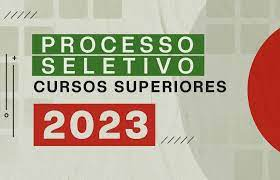

O Sistema de Seleção Unificada (Sisu) reúne em um sistema eletrônico gerido pelo MEC as vagas ofertadas por instituições públicas de ensino superior de todo o Brasil, sendo a grande maioria delas ofertada por instituições federais (universidades e institutos). O sistema executa a seleção dos estudantes com base na nota do Exame Nacional do Ensino Médio (Enem). Até o limite da oferta das vagas, por curso e modalidade de concorrência, de acordo com as escolhas dos candidatos inscritos, eles são selecionados por ordem de maior classificação, em cada uma das duas edições anuais do Sisu
Processo Seletivo Especial para ingresso nos Cursos Superiores Presenciais do IFPB nas modalidades: (I) REINGRESSO: destinada a discentes de cursos superiores de graduação que perderam o vínculo com o IFPB e desejam retomar sua matrícula no curso; (II) REOPÇÃO DE CURSO: destinada a discentes vinculados aos cursos superiores de graduação do IFPB que desejam mudar de curso; (III) TRANSFERÊNCIA INTERINSTITUCIONAL: destinada a discentes oriundos de cursos superiores de graduação de outras Instituições de Ensino Superior, que queiram dar prosseguimento aos seus estudos no IFPB; (IV) INGRESSO DE GRADUADOS: destinada a portadores de diplomas de cursos superiores de graduação, devidamente reconhecidos, que tenham interesse em realizar um curso superior de graduação no IFPB.
A seleção será realizada por meio de análise do desempenho das notas das áreas de conhecimentos: Ciências da Natureza e suas Tecnologias; Ciências Humanas e suas Tecnologias; Linguagens, Códigos e suas Tecnologias; Matemática e suas Tecnologias; e de Redação, conforme descritas no boletim de desempenho do Exame Nacional do Ensino Médio (ENEM).